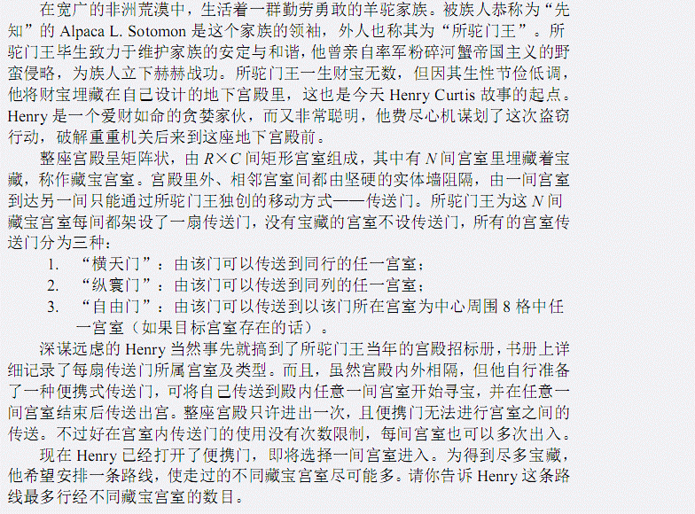

第一行给出三个正整数 N, R, C。 以下 N 行，每行给出一扇传送门的信息，包含三个正整数xi, yi, Ti，表示该传送门设在位于第 xi行第yi列的藏宝宫室，类型为 Ti。Ti是一个1~3间的整数， 1表示可以传送到第 xi行任意一列的“横天门”，2表示可以传送到任意一行第 yi列的“纵寰门”，3表示可以传送到周围 8格宫室的“自由门”。 保证 1≤xi≤R，1≤yi≤C，所有的传送门位置互不相同。

第一行给出三个正整数 N, R, C。 以下 N 行，每行给出一扇传送门的信息，包含三个正整数xi, yi, Ti，表示该传送门设在位于第 xi行第yi列的藏宝宫室，类型为 Ti。Ti是一个1~3间的整数， 1表示可以传送到第 xi行任意一列的“横天门”，2表示可以传送到任意一行第 yi列的“纵寰门”，3表示可以传送到周围 8格宫室的“自由门”。 保证 1≤xi≤R，1≤yi≤C，所有的传送门位置互不相同。
只有一个正整数，表示你确定的路线所经过不同藏宝宫室的最大数目。
10 7 7
2 2 1
2 4 2
1 7 2
2 7 3
4 2 2
4 4 1
6 7 3
7 7 1
7 5 2
5 2 1
9测试点编号 N R C 1 16 20 20 2 300 1,000 1,000 3 500 100,000 100,000 4 2,500 5,000 5,000 5 50,000 5,000 5,000 6 50,000 1,000,000 1,000,000 7 80,000 1,000,000 1,000,000 8 100,000 1,000,000 1,000,000 9 100,000 1,000,000 1,000,000 10 100,000 1,000,000 1,000,000